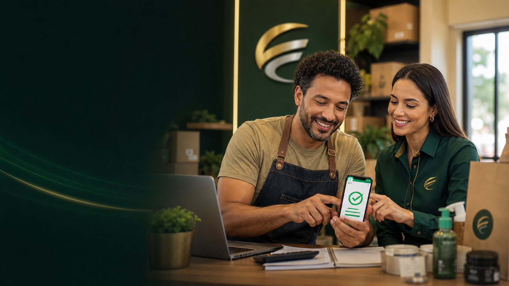

Processo simples
Você envia os dados essenciais e recebe orientação sem linguagem complicada.

Resposta rápida
Para contas urgentes, compra pequena, ajuste no orçamento ou oportunidade que não pode esperar o mês virar.
Sem compromisso. Atendimento humano e retorno em horário comercial.
Sem excesso
A CredMais ajuda você a pedir o valor certo para a necessidade de agora, evitando uma contratação maior do que o necessário.
Você envia os dados essenciais e recebe orientação sem linguagem complicada.
A conversa começa pelo que precisa ser resolvido, não por uma proposta genérica.
A equipe acompanha a solicitação e explica o próximo passo com clareza.
A página organiza necessidades simples para que o visitante entenda rapidamente se esse caminho combina com o momento dele.
Energia, água, internet, parcela ou despesa que não pode esperar.
Um item de trabalho, conserto doméstico ou reposição rápida.
Organização de uma semana apertada sem pedir mais do que precisa.
Menos etapas, mais foco no valor e no motivo da solicitação.
Jornada simples
Definir exatamente o que precisa ser resolvido.
Escolher um valor enxuto, coerente com a necessidade.
Enviar a solicitação e receber orientação direta.
Confiança CredMais
Quem procura crédito precisa de velocidade, mas também precisa entender o próximo passo com segurança.
prazo médio para retorno em horário comercial
rotas separadas para comércio, microcrédito, motoristas e entregadores
simulação inicial pelo WhatsApp, com orientação humana
“Eu precisava organizar estoque e caixa. A conversa já começou no ponto certo.”
Comerciante atendido
“Expliquei o problema do carro e recebi um caminho simples para análise.”
Motorista de aplicativo
“Gostei porque não tive que repetir tudo. A solicitação já foi bem direcionada.”
Entregador parceiro
Dúvidas frequentes
Não. Você informa o perfil, valor desejado e cidade para receber orientação inicial sem compromisso.
Depende do perfil. A CredMais direciona a conversa para comerciante, microcrédito, motorista ou entregador.
Sim. O primeiro contato pode começar pelo WhatsApp, com atendimento humano e orientação clara.
O retorno acontece em horário comercial, geralmente em até 24 horas após o envio das informações.
Simulação
Informe o valor desejado e a cidade para a CredMais orientar o próximo passo.